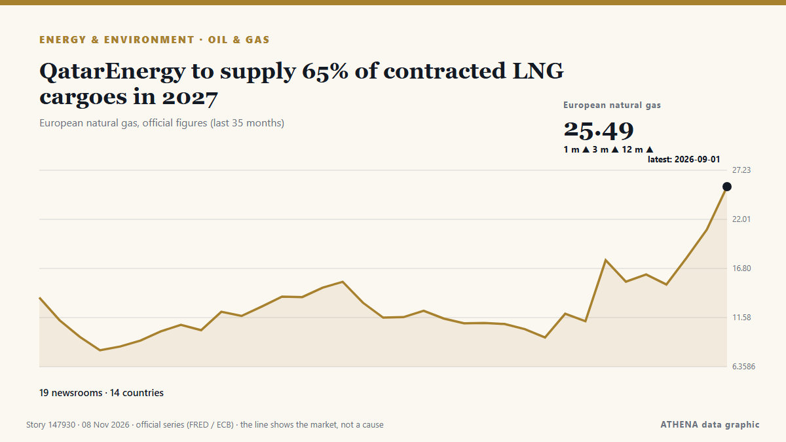

Πετρέλαιο & φυσικό αέριο
ΧορηγούμενοΠαρουσιάζεται από  Cybernetics and Artificial Intelligence Lab Welcome to the Cybernetics and Artificial Intelligence Laboratory, established at the Department of Business Administration of the National and Kapodistrian University of Athens. The lab is headed by Professor Dimitrios Thomakos. The lab aims to do research that can be published in top venues. Our research uses tools and methods of Artificial Intelligence, and lies in the following areas: - Forecasting - Decision making - Cyber security - Finance We are always looking forward to collaborating with exceptional students!
Cybernetics and Artificial Intelligence Lab Welcome to the Cybernetics and Artificial Intelligence Laboratory, established at the Department of Business Administration of the National and Kapodistrian University of Athens. The lab is headed by Professor Dimitrios Thomakos. The lab aims to do research that can be published in top venues. Our research uses tools and methods of Artificial Intelligence, and lies in the following areas: - Forecasting - Decision making - Cyber security - Finance We are always looking forward to collaborating with exceptional students!
| 27 Οκτ | 0 |
|---|---|
| 28 Οκτ | 0 |
| 29 Οκτ | 1 |
| 30 Οκτ | 0 |
| 31 Οκτ | 0 |
| 1 Νοε | 0 |
| 2 Νοε | 1 |
| 3 Νοε | 2 |
| 4 Νοε | 3 |
| 5 Νοε | 5 |
| 6 Νοε | 6 |
| 7 Νοε | 2 |
| 8 Νοε | 1 |
| 9 Νοε | 0 |
Οι τίτλοι των ειδήσεων παρουσιάζονται στα αγγλικά, όπως δημοσιεύτηκαν.

QatarEnergy to supply 65% of contracted LNG cargoes in 2027
The Cabinet Committee on Government Purchase has instructed Petrobangla to prepare the Annual Delivery Programme for LNG imports up to March 2027 instead of finalising the entire year’s schedule… από The Business Standard (Bangladesh) (working feed)
ADNOC signs LNG deal with Gujarat Energy to supply 4 million tonnes over 10 years
Woodside will supply QatarEnergy with up to 3 million tpy of LNG for 20 years from its Louisiana LNG project, with deliveries expected to start in 2030. από Oil & Gas Journal
Current price of oil as of November 4, 2026
When oil prices change, it affects your energy costs—and even the price of everyday items. από Fortune
Namibia: Dangote Promises Cheaper Fuel for Namibia...Launches N$41.6b Pipeline Project in Walvis
[New Era] Walvis Bay -- Namibians could see a significant reduction in fuel prices when the Dangote Namibia Tank Farm and Regional Pipeline project becomes operational. από AllAfrica
‘Baby Barrel’: The next Boland leading Australia’s emerging cartel
These are the men who loom as the future of Australia’s fast bowling stocks, and are already making waves on the big stage. από The Age
Russian Spending on Refinery Subsidies Hits Highest since 2022
Russian subsidies paid to oil producers for keeping road fuels in the domestic market climbed to the highest in more than four years, eating into the Kremlin's energy revenues. από Rigzone
North American rig count up slightly as Canada adds oil rigs
In North America, 823 rigs were working this week, up 3 from last week, and up 74 from this time last year. από Oil & Gas Journal
SLB OneSubsea secures Aker BP contract for Lyra field in Norway
SLB OneSubsea has been selected by Aker BP to provide subsea production systems, umbilicals and related services for the Lyra field on NCS. από Offshore Technology
Brent oil price benchmark set for biggest weekly drop since 2020
LONDON: Oil prices were set for a sharp weekly fall after the election losses of US President Donald Trump's Republican Party raised hopes of a de-escalation in the US-Israeli war on Iran and a stock… από New Straits Times
Oil prices rebound as US results, Iran war shape markets
Oil prices rose on Friday, recovering some of their recent losses after a turbulent week marked by the US midterm elections and uncertainty over the course of the war between the U... από Oman Observer
Turkey says gas pipeline project with Turkish Cypriots can provide power to whole island
Turkish Energy Minister Alparslan Bayraktar said a planned natural gas pipeline linking Turkey and the breakaway Turkish Cypriot community could eventually provide power to the entire ethnically… από Cyprus Mail
U.S. crude oil imports from Venezuela in July were highest since 2017
In July 2026, U.S. imports of crude oil from Venezuela averaged 701,000 barrels per day (b/d), the most since May 2017, before decreasing to 655,000 b/d in August, according to data published in our… από US EIA Today in Energy
Worley Lands EPC Contract for Venture Global's CP2 LNG Expansion
Worley has signed a reimbursable engineering, procurement and construction (EPC) contract with Venture Global for the CP2 Expansion project in Louisiana, United States… από Offshore Engineer
Injury in Adygea, fire in Krasnodar Region, 142 drones downed: aftermath of new attacks
A Gorlovka resident was injured in a Ukrainian drone attack in the Tsentralno-Gorodskoy District. από TASS (English)
Brent crude oil price exceeds $100
Oil prices experienced a decline of over 1% after hitting six-month peaks, primarily due to geopolitical unrest in Saudi Arabia. από Times of India
Ukrainian forces have rendered 15 of 38 main Russian oil refineries inoperable
Attacks by Ukrainian forces have shut down 15 major Russian refineries and forced 12 others to cut production, triggering domestic fuel supply shortages. από Ukrainska Pravda (English)
Wärtsilä Helps Chevron Cut Methane Emissions with LNG Carriers Upgrade
Wärtsilä has completed the conversion of one engine on each of three LNG carriers operated by Chevron Transport Corporation from dual-fuel to spark gas operation, as part of a project aimed at… από MarineLink
Commonwealth leaders adopt disability inclusion plan to benefit 450 million people
Staff WriterCommonwealth leaders have endorsed a new action plan aimed at strengthening the rights and improving opportunities for more than 450 million persons with disabilities across the… από Antigua Observer